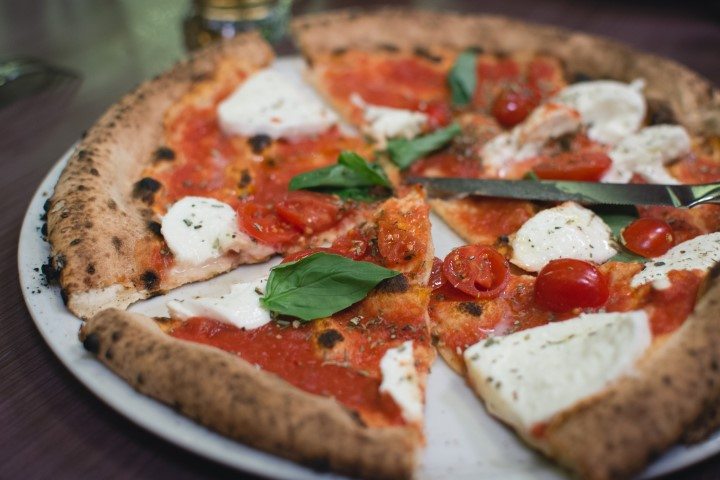
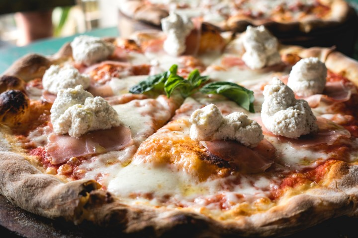
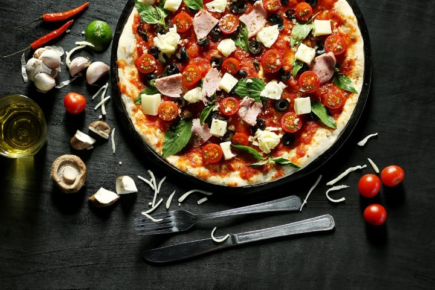
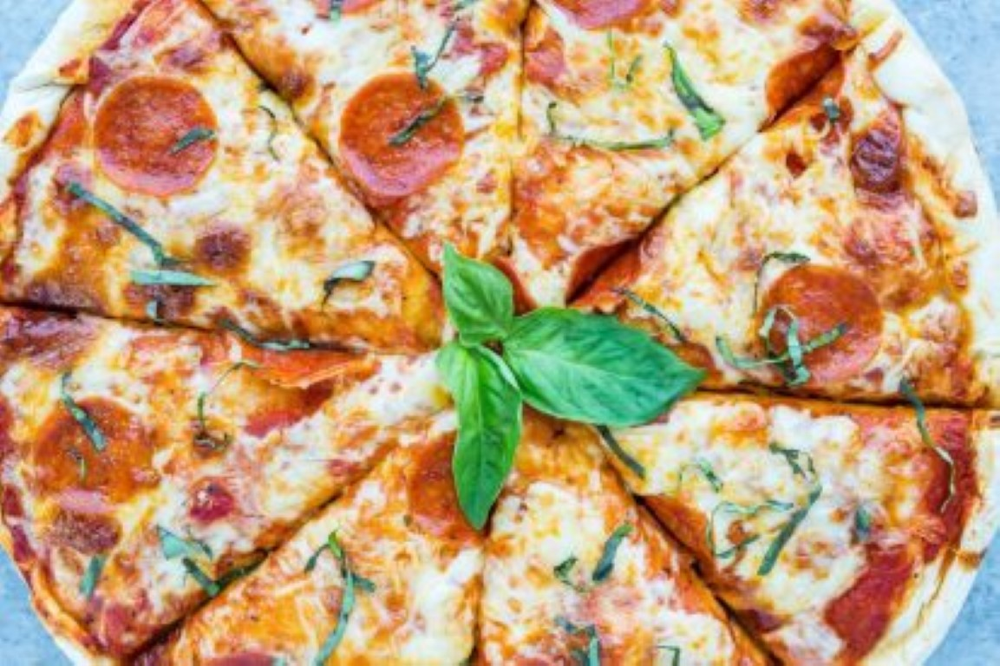

One of My Favorite Foods...PIZZA!
Photo credit: Jakub Kapusnak on Foodiesfeed.com

Photo credit: Jakub Kapusnak on Foodiesfeed.com

Photo credit: LEi-DESIGN on Foodiesfeed.com

Photo credit: Iftekhar Uddin Emon on Foodiesfeed.com

Photo credit: Jakub Kapusnak on Foodiesfeed.com

Photo credit: Jakub Kapusnak on Foodiesfeed.com

Photo credit: Hoa Luu on Foodiesfeed.com

Photo credit: Whitney Wright on Foodiesfeed.com